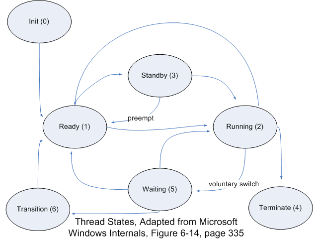

By using interrupt driven I/O, a processor doesn't have to continually wait in a busy loop for I/O operations to complete -- devices can generate an interrupt in hardware to notify the Windows OS that they need service. While there are alternatives, such as polling and direct memory access, most printers, keyboards, disk-drives and network cards use interrupt based I/O. Typically, this functionality is supported through an interrupt controller that services hardware interrupts after Windows fills an array of function pointers during the boot process. Through the HAL and a platform-dependent interrupt controller in hardware, Windows' plug and play manager handles interrupt assignments, where interrupts may be shared by more than one device. When these interrupts occur, the CPU control is transferred to an Operating System function called a dispatch function which provides service or delegates to code that can. It must also determine, if the interrupt is shared, which device actually caused the interrupt.
In Windows XP, more than just an I/O device's requests for service can generate an interrupt. The kernel can use 'software interrupts' to perform scheduling, handle page faults, handle the expiration of a time slice, or asynchronously execute procedures in the context of a particular thread. For handling most software interrupts, the kernel uses an interrupt object that can be interrogated by drivers to provide service to interrupting devices. During some interrupt handling the kernel also disables all other interrupts, which then will remain until handled. In Windows XP, these interrupts are mapped into software interrupt request levels (IRQLs) -- but not all IRQLs correspond to interrupts.
What follows is a diagram of the x86 IRQL-model:
In the IRQL scheme, any higher level IRQL may interrupt any lower level IRQL (lower levels are masked when the system is at a higher IRQL). Most device drivers will operate at DPC/Dispatch, APC, or Passive level. The kernel uses the High IRQL during a BugCheck (a blue screen of death) or when masking all interrupts. Kernel profiling level is used when kernel profiling is turned on to measure kernel performance. Device interrupts occur somewhere between dispatch/DPC and the profiling level. Clock level is used for tracking time quantums, time/process accounting, and scheduling (think about why a multiprocessor system might need this synchronization in scheduling). DPC and APC levels are used for software interrupts, and will be explained later.
One important thing to remember as a driver writer is that any code executing at or above DPC/Dispatch level must not activate scheduling code in the kernel since the scheduler uses dispatch level to synchronize access to data structures. One major indirect result is that code at dispatch or higher may also not cause page faults, as this would cause rescheduling to the memory manager. When drivers violate these or other rules about working with IRQLs, Windows immediately calls KeBugCheck (see MSDN) and creates the blue screen of death and halts the system.
Finally, the kernel uses Interrupt Objects for saving the mapping from a device's interrupt to its IRQL, storing interrupt service routine pointers, and allowing drivers to register dispatch routines for device interrupts. The most important use of interrupt objects is by the generic kernel dispatcher routine that handles all interrupt dispatching -- the generic routine typically pulls a pointer to a driver's dispatch routine out of the object and then calls this (secondary) dispatcher. Like many other kernel data structures, Interrupt Objects are object-oriented but are still implemented with C code.
Dispatch procedure calls are a process by which the kernel defers thread dispatching while the kernel is in the midst of another task. This must be deferred because the kernel is often servicing an interrupt at an IRQL greater than DPC/Dispatch level but detects that rescheduling is needed. These dispatch procedure calls are a convienent way defer a non-time critical but important task. Similarly, deferred procedure calls enable other kernel-code (including device drivers) a way to postpone execution until a later time. The kernel uses DPCs to process timer expiration (the system clock), wake threads waiting on timers or other kernel objects or synchronization mechanisms, among many other tasks. Device drivers use DPCs to schedule the handling of I/O completion without spending a ton of time at the device's interrrupting IRQL -- devices can acknowledge an interrupt and schedule a call to an I/O completion routine later .
Similar, asynchronous procedure calls are a more advanced version of the DPCs discussed above. These are routines that can be scheduled to execute in the context of a particular thread, and at an IRQL < dispatch/dpc level (the APC level). The advantage of code being called at this lower IRQL is that it may incur page faults, use system services, and have access to a specific thread context. Unlike the systemwide DPC queue, each thread has its own APC queue. Device drivers use the APC mechanism to return to a thread that requested an I/O operation after the operation has completed; the device driver code, in the context of the thread that initiated the I/O request, can fill a user-mode addressed buffer with the returned I/O data. APCs are also used to suspend threads from execution until a particular event occurs, and then an APC is scheduled by the event's callback function.
In Windows, the thread is the basic unit of execution. Each process has one or more threads, and may have just one thread. Each process has a block of memory which contains many fields of information about the process, as well as pointers to blocks of information about each individual thread. Each thread has it's own stack and execution context within the process address space; each thread is also the basic unit of Windows Scheduling. Within the kernel, the work of the 'scheduler' is actually distributed and there is no 'one' unit that directs the task of scheduling threads. This section will not go into all of the possible scheduling scenarios in detail, but it is important as a driver writer to be aware of what the kernel dispatcher is doing when your code is called.

Windows XP has priority values numbered 0 through 31 for threads, where 31 is the highest and 0 is the lowest. Priority values from 16 to 31 are reserved for "real time" threads, and threads at those levels may interefere with system threads' ability to perform critical system tasks. Note that real time is not used in the traditional sense here -- XP is not technically a real time OS and real time here means the same as the priority of a kernel-mode thread. As an added feature, users must have an extra privledge to raise a thread to a realtime priority, but don't need that privledge to change priorities within the dynamic time range (explanation of dynamic time priorities follows). Priority values from 1 to 15 are for "dynamic time" threads, which are used by most user-mode applications and some others as well. The 0 priority is reserved for a single system thread that zeros out free memory pages when no other work in the system needs to be performed.
Threads will normally always execute at IRQL = Passive or IRQL = APC (that is, thread priority 31 is still lower priority than the dispatch/DPC IRQL). Under that limitation, threads will never block a hardware interrupt, but may block software interrupts and kernel-threads that handle DPCs queued during an interrupt. Kernel threads and realtime ones may operate specifically at IRQL = APC whereas user-mode threads (except the realtime ones) will operate at passive level IRQL. As a driver writer, you should know that system threads will always invoke the DriverEntry routine (the first time any device is loaded that uses your device) within a system thread at passive level; all driver dispatch routines will be called at DPC/dispatch level or higher, as they may be a result of interrupts (this also means that the kernel's dispatch routines, which may call your dispatch routines, can arbitrarily raise and lower the IRQL as needed to synchronize access to protected kernel data structures). When working within kernel mode inside a driver, there is a KeGetCurrentIRQL routine (again, this is documented on the MSDN library) that can be called to verify the IRQL your code is running at.
In Windows XP, a single time quantum is usually three times the system clock interval, and the overhead that sets this up usually occurs through calls to the HAL. In Windows XP, threads usually for 2 quantums (but in Windows Server environments, they usually run longer to minimize the overhead of context switching). Keep in mind, however, that threads may be preempted during their quantum, and they may still have their quantum deducted without actually getting a chance to execute (if threads preempted for a dispatcher never got their quantum deducted, they would never complete their quantum, and system interrupts would never allow the thread to exhaust its quantum = deadlock).
The important part of this discussion related to drivers is the idea of quantum boosting: a thread will get its quantum multiplied by some factor each time some 'favorable' event occurs due to the thread. Quantum boosting is an elegant alternative to priority boosting, because raising a priority for a thread that does something good will eventually reach the max priority, and competition between two threads who both earn a priority boost isn't very productive in terms of system behavior. One type of quantum boosting occurs when a thread is brought into the foreground of the GUI; in this case, a thread's quantum is doubled or tripled each time it is brought into the foreground.
When there is high contention for the CPU, this method very accurately leverages an appropriate scheduling scheme because a thread's quantum expnonentially increases the more it is brought to the foreground -- this is not the case if priorities are continually raised. Other types of quantum boosting include boosting for threads that voluntarily block, complete an I/O request (this one is reflected in function call arguments to complete driver I/O requests by allowing the driver to offer a quantum boost for the thread), CPU starvation, waiting for synchronization events, or for threads that own windows when the GUI is activated (or reactivated). Quantum boosting is one of many elegant schemes that allows XP to be fully responsive to the user, the user's devices, and system services. It may be interesting to note that many of the Windows Server systems have some different variations of 'quantum management' and most use larger quantums and don't boost as much for GUI-related threads.